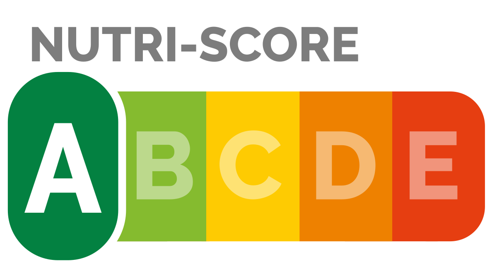

Base de données - nutriscore
A partir d’une base de données disponible en opendata et renseignée par des contributions libres (donc mal remplie, et contenant plus d’informations que nécessaire etc.), réaliser une étude simple contenant des graphiques appropriés pour répondre à une question précise, et rédigée en anglais.
Gestion de BD
Tri de données
Production de graphiques